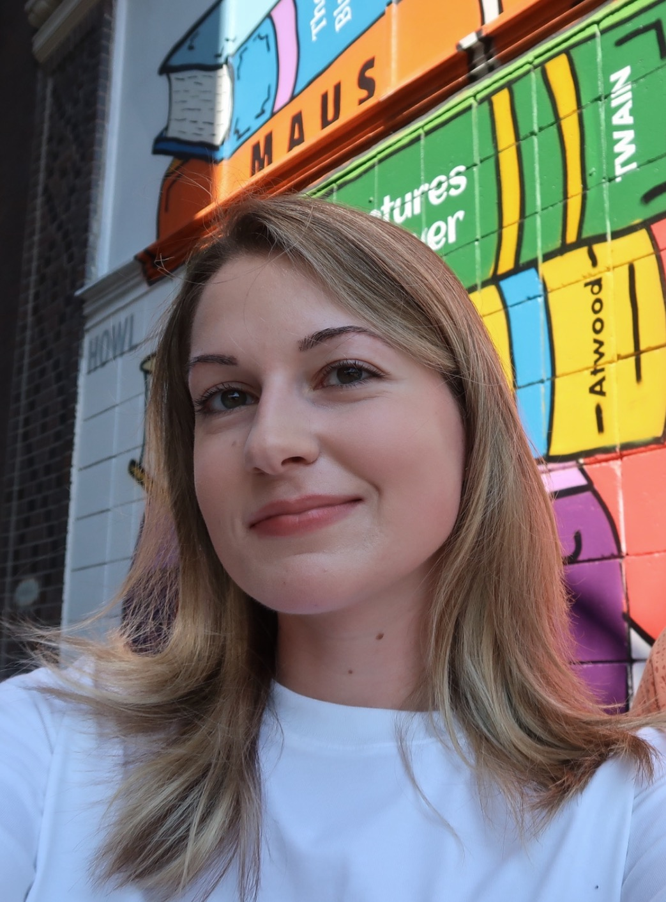

|  | Yolande Bennett is the Assistant Digital Archivist at Massachusetts Archives, where she assists in making permanent historic state records available online through the Archives’ Digital Repository. She received her bachelor’s degree in Graphic Design from Lesley University in 2020, and a master’s degree in Library and Information Science, with a concentration in Archives Management, from Simmons University in 2023. She lives in Cambridge, Massachusetts. |